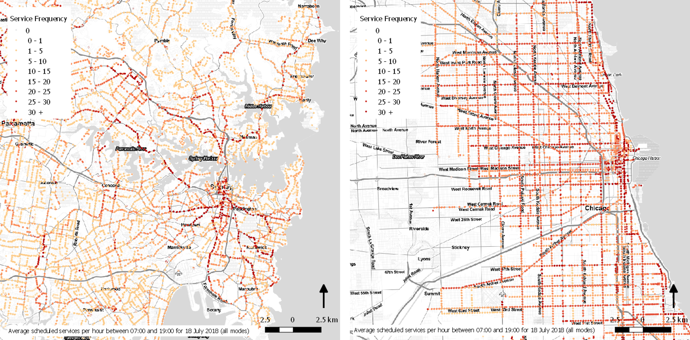
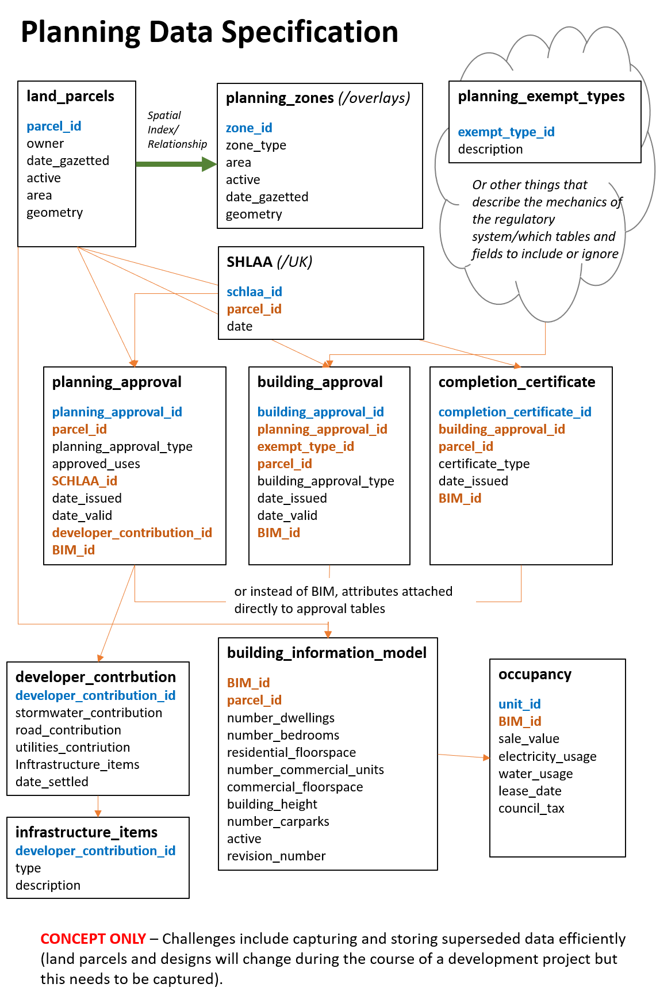

A Planning Data Specification
In conversation with PlanTech Week 18 at the Future Cities Catapult in London
20 June 2018
We need an open standardised data schema for urban planning. All the planners in the room please hear me out.
Keeping track of development across a city is currently an impossible nightmare. Data used and generated by planners is stored in many different ways. The software used to process planning approvals is not the same between local authorities and inside a local authority there may be different systems for property and zoning information, planning approvals and building certificates. For places like greater Sydney or London (each with 33 local authorities) the thought of trying to write something to translate between them gives me vertigo.
Solution? A universal open planning data specification. When a consistent format for data is agreed upon it is possible to achieve amazing things.
Take the General Transit Feed Specification (GTFS) for example. This sets a standard format for public transport data and specifies six mandatory tables of data lined by common attributes. Together these tables will tell you the date and time a tram, subway, train, bus, ferry, cable car, gondola or funicular will depart and where it is going for every stop or station in the network. There are also non-mandatory tables and fields to store lots of additional useful information such as fare price and wheelchair accessibility. The result? No matter what city and country you are in, you can use Google maps to tell you how to get public transport. The raw data is usually published openly allowing you to make cool maps like this without changing your code:

Left: Sydney, Right: Chicago
Data sourced from Transport for NSW and Chicago Transit Authority
Now what would an open planning data specification look like? There is a lot that would need to be carefully thought through, for more than the time I have had to write this blog, but I have started to sketch the bare bones in the image below*.

The specification needs to be open and mandated at a central government level**, in a similar fashion to the UK BIM Strategy. Is it possible to make it truly universal? Whilst there are similarities between the planning systems of different countries it is not quite as straightforward as a bus pulling up at a stop. Even if not universal, it should at the very least be possible to develop a specification for each area covered by the same planning regulatory framework, usually a country or a state.
Will it be easy? No. Developing the specification would be the easy part. Aligning each separate system will be tough work. Particularly lining up land title information, usually held centrally, with planning approvals, usually held with the local authority. Consultation would also be required to confirm the minimum required information. In fact, my list of considerations stretches on quite a long way, hence will be left for another time.
The proposition is no small challenge, but it is worth it. If planning and property agencies, like transit agencies, could produce the data in such an open standardised format there is huge potential for application. A real-time interactive map of development approvals and completions occurring across the city (country, world?) is one. Market intelligence for business another. The data would also allow for all types of statistical analysis and research to assist with policy development and review.
So, I can’t be the only person to have started thinking about this. What do you think? How close are we? How do you structure your own data within your planning agency? Does it line up with others? Please let me know your thoughts on LinkedIn or Twitter @ClaireCities!
* I have experience working with a few different planning systems but deep knowledge of Queensland in Australia, so apologies if comes out too strongly.
**either that or Google needs to get in on it again and, in a similar way to the trip planner function and GTFS, set customer expectations in such a way that everyone will quickly want to comply.
 @ClaireCities
@ClaireCities